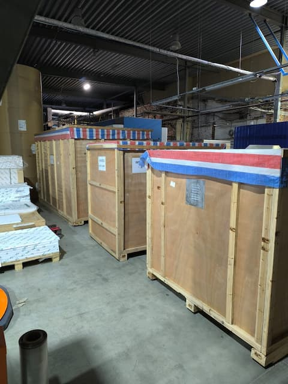
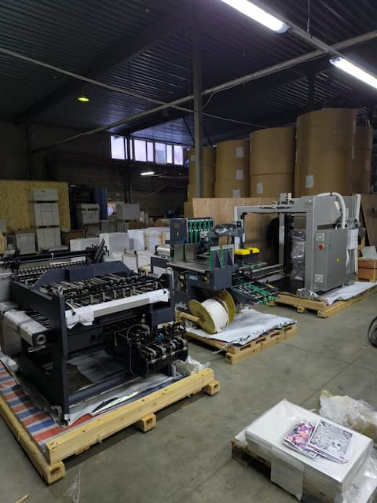
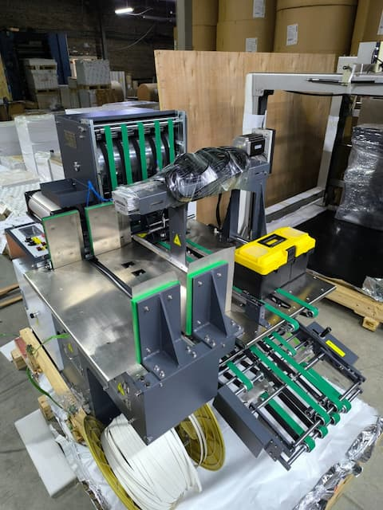

У нас пополнение! В типографию уже пришла и разгружена новая фальцевальная машина!

ZYHD780C-LD — это гибридная фальцевальная машина с электрическим ножом и портальной системой загрузки бумаги. Она может выполнять 4-кратное параллельное складывание и 3-кратное вертикальное складывание. Это позволит нам быстрее выполнять работы, особенно с А1 формата, а также у данной фальцовки есть функция биговки.
Высокоточный детектор высоты стопы.
Высокоточная косозубая передача гарантирует идеальную синхронизацию и низкий уровень шума.
Импортные складные ролики из прямоволокнистой стали гарантируют наилучшую силу подачи и уменьшают вмятины на бумаге.
Электрическая система контролируется микрокомпьютером, протокол Modbus обеспечивает связь машины с компьютером; Человеко-машинный интерфейс облегчает ввод параметров.

Плавное управление с помощью VVVF с функцией защиты от перегрузки.
Чувствительное автоматическое устройство контроля двойного листа и замятого листа.
Обтекаемая панель кнопок с импортной пленкой для нажатия клавиш гарантирует эстетичную поверхность и надежную работу;
Функция отображения неисправностей облегчает поиск неисправностей;

Подрезка, перфорация и резка; Нож с электроуправлением и сервомеханизмом для каждого сгиба обеспечивает высокую скорость, превосходную надежность и незначительный расход бумаги.
Четвертое складывание можно включать и выключать основной кнопкой самостоятельно. При выполнении третьего складывания силовую часть четвертого складывания можно остановить, чтобы уменьшить износ деталей и снизить потребление энергии.
Заполнение полного бумажного стола для подачи экономит время при торможении машины для подачи, повышает эффективность работы и снижает интенсивность работы.
Дополнительное устройство подачи пресса или прессовое устройство могут снизить интенсивность работы и повысить ее эффективность.